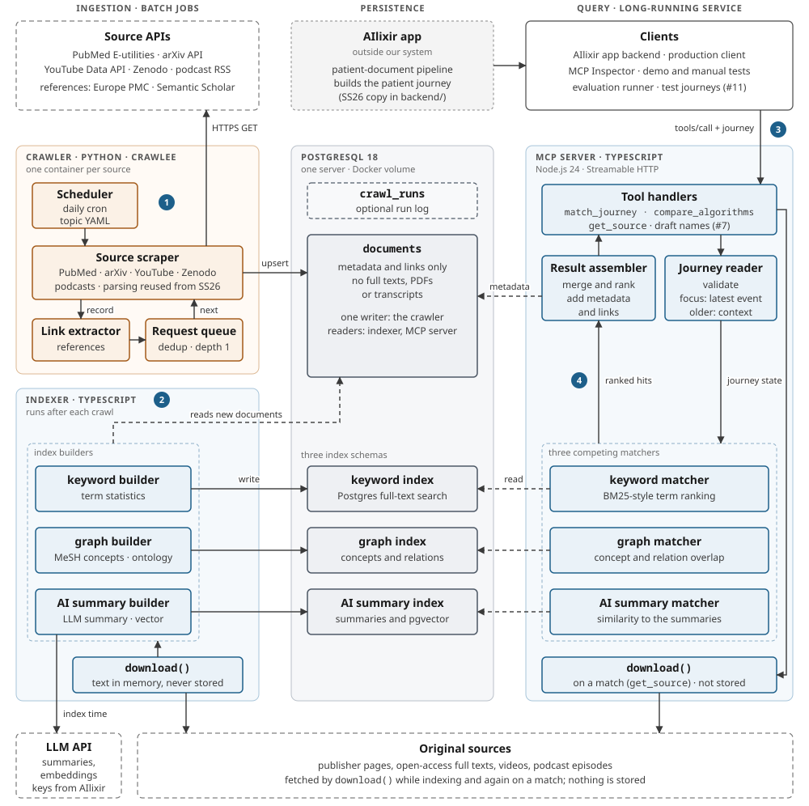
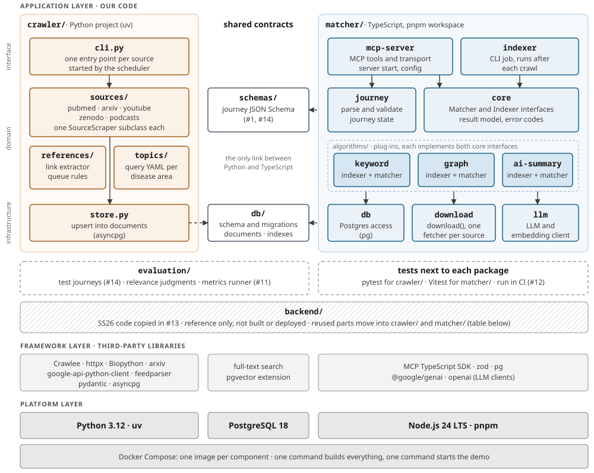

What runs and who calls whom. Ingestion runs as scheduled batch jobs, all data is in one PostgreSQL server, and clients talk to one long-running MCP server. The numbered steps are explained on page 4.

documents, the indexer writes the three indexes, and the MCP server only reads.download() is one TypeScript module used by the indexer and the MCP server. Full texts stay in memory and are never written to the database.How the code in this repository is organised. Each layer only uses the layers below it. Inside our code, interface modules call domain modules, and domain modules call infrastructure modules.

backend/ goesSS26 code (backend/…) | Target | How |
|---|---|---|
scrapers/…/PubMed, Archive (arXiv), YouTube (official API part) | crawler/sources/ | Reuse the search and parsing code. Requests go through Crawlee. PDF downloads are dropped; chunking and embedding move to the indexer. |
scrapers/…/BaseScraper (stable IDs, dedup) | crawler/sources/ base class | Adapt: split fetching and parsing from indexing. |
scrapers/key_words/*.csv, scrapers/topics.py | crawler/topics/ | Reuse as seed queries, converted to one YAML file per disease area. |
workers/pipeline/graph/medical_schema.py | matcher/algorithms/graph | Port the entity and relation types to TypeScript. |
api/chat_pipeline/paper_retriever.py, availability.py, astra_client.py, reranker_client.py | matcher/core, download | Port the result shape, timeouts and the circuit breaker. AstraDB and reranking clients only if we keep those services (open). |
workers/connections/gemini_client.py | matcher/llm | Port the pacing and retry conventions. |
api/, workers/ document pipeline, shared/ (Firestore, GCS, Pub/Sub) | not in the first release | Stays on the AIlixir side. Reference for a later adapter that builds journeys from patient documents. |
backend/, Documentation/ and Deliverables/.2 / 4The first-level technologies we build on, grouped by layer. Versions are the current releases on 27.10.2026. The lockfiles pin exact versions, and the bill of materials in the planning document (#16) is the binding list. Course rule: no copyleft licences in the product.
| Technology | Version | Used for | Licence | Basis |
|---|---|---|---|---|
| Languages and runtimes | ||||
| Python | 3.12 | Crawler | PSF-2.0 | Partner |
| TypeScript on Node.js | Node 24 LTS | Indexer, matchers, MCP server | Apache-2.0 / MIT | Partner |
| Crawling (Python) | ||||
| Crawlee for Python | 1.11 | Request queue with dedup, retries and rate limits | Apache-2.0 | #5 |
| Biopython (Entrez) | 1.88 | PubMed search and record parsing | Biopython (BSD-style) | #13 |
| arxiv | 4.0 | arXiv API client | MIT | #13 |
| google-api-python-client | 2.201 | YouTube Data API, official API only | Apache-2.0 | #5 |
| feedparser | 6.0 | Podcast RSS feeds | BSD-2-Clause | Proposal |
| pydantic | 2.14 | Validating source records | MIT | #13 |
| asyncpg | 0.32 | Writing to documents | Apache-2.0 | Proposal |
| Storage | ||||
| PostgreSQL | 18 | documents, run log, three index schemas | PostgreSQL | #5 Proposal |
| Postgres full-text search | built in | Keyword index: term statistics and ranking | PostgreSQL | Proposal |
| pgvector | 0.8 | Vectors for the AI summary index (AstraDB is open, page 4) | PostgreSQL | Proposal |
| Indexing, matching and MCP interface (TypeScript) | ||||
| MCP TypeScript SDK | 1.32 | MCP server over Streamable HTTP | MIT, moving to Apache-2.0 | Partner |
| zod | 4.6 | Tool schemas and journey validation | MIT | Proposal |
| pg (node-postgres) | 8.23 | Database access | MIT | Proposal |
| AI services (hosted, keys from AIlixir) | ||||
| Gemini via Vertex AI (@google/genai) | SDK 2.31 | Source summaries at index time | Apache-2.0 (SDK) | #13 |
| OpenAI embeddings (openai) | SDK 7.45 | Vectors for the AI summary index | Apache-2.0 (SDK) | #13 |
| Build, test and delivery | ||||
| Docker Compose | 5.6 | One command to build, one to start the demo | Apache-2.0 | Proposal |
| uv · pnpm | 0.13 · 12.15 | Dependencies and lockfiles for the bill of materials | MIT / Apache-2.0 · MIT | Proposal |
| pytest · Vitest · Ruff · Biome | 9.1 · 5.0 · 0.17 · 2.6 | Unit tests, linting and formatting | MIT; Biome also Apache-2.0 | Proposal |
| GitHub Actions | service | Tests and lint on every pull request | service terms | Proposal |
| Demo and test data | ||||
| MCP Inspector | 2.12 | Demo client for reviews | MIT / Apache-2.0 | Proposal |
| meddocgenerator (AIlixir) | main | Synthetic patient journeys | Apache-2.0, headers to clarify | Partner |
Basis: Partner project description or AIlixir · #5 crawler evaluation · #13 reuse plan · Proposal this document, to be confirmed in review.
The Patient Journey Matcher is an MCP server for the AIlixir app. A client sends a patient journey, a dated list of events such as diagnoses and operations, and gets back papers, preprints, videos and podcast episodes that fit the most recent point in that journey.
documents. It stores metadata and links only, never full texts.download(), keeps it in memory, and writes three separate indexes: keyword, graph and AI summary. Only the AI summary builder calls an LLM, and only with public source text.documents. When the client asks for one source, download() fetches the original again and passes it on without storing it.The layers follow the lecture: platform at the bottom, third-party frameworks on top of it, our application code on top of those. The crawler (Python) and the matcher (TypeScript) share no code. Their only contracts are the database schema in db/ and the journey JSON Schema in schemas/, so both sides can be built and tested on their own. Each algorithm is a plug-in that implements the Indexer and Matcher interfaces from core; a fourth approach would not change the server. backend/ holds the SS26 code copied in #13. It is not built; page 2 lists where its parts move.
documents table is the interface between the two.documents. Full-text search and pgvector cover the keyword and AI indexes in the same server, and the graph index fits in two tables for concepts and relations. One database server keeps the demo to one command, and avoids the GPL-3.0 Neo4j server.